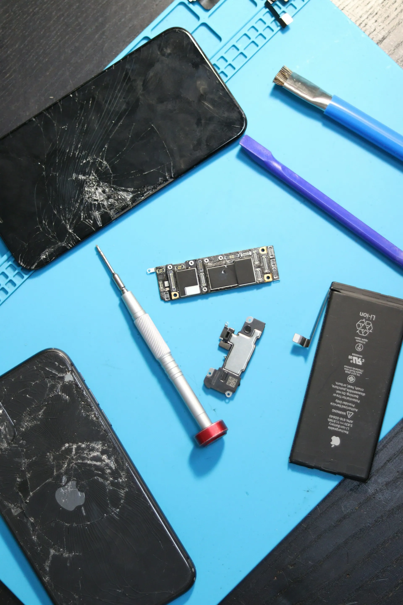

Ремонт смартфонов и ноутбуков, Красноярск
Разбитый экран — за 40 минут, при вас
Ремонт смартфонов, планшетов и ноутбуков. Диагностика бесплатно, цену называем до начала работы и не меняем. Гарантия на экран и аккумулятор — 6 месяцев.
- Рейтинг
- 4,9
318 отзывов на Яндекс Картах - Адрес
- ул. 78-й Добровольческой бригады, 12
ТЦ, первый этаж, у входа с остановки - Часы
- Ежедневно 10:00–21:00
- Устройство
- iPhone 13
- Неисправность
- Разбит экран
- Диагностика
- 0 ₽, 10 минут
- Срок
- 40 минут
- Гарантия
- 6 месяцев
Цена из квитанции не меняется. Нашли ещё поломку — сначала спросим.

Цены на ремонт
Цены — за работу с запчастью. Точную стоимость для вашей модели назовём после бесплатной диагностики.
- ДиагностикаПри васбесплатно10–20 минут
- Замена экрана iPhoneот 6 900 ₽40 минут
- Замена экрана Androidот 4 500 ₽1 час
- Замена аккумулятораот 2 900 ₽30 минут
- Замена разъёма зарядкиот 2 400 ₽1 час
- Чистка ноутбука и замена термопасты2 500 ₽1 день
- Замена клавиатуры ноутбукаот 3 500 ₽1 день
- Восстановление после водыЧем раньше принесёте, тем больше шансовот 3 000 ₽1–2 дня
Как проходит ремонт
- Запись или просто приходите
Запишитесь на время — запчасть для вашей модели будет готова к приходу.
- Диагностика при вас
Мастер проверяет телефон 10–20 минут и называет причину, цену и срок.
- Квитанция
Цена, срок и гарантия — в квитанции. Без вашего согласия работа не начнётся.
- Ремонт и проверка
Проверяем вместе с вами камеру, звук, зарядку и сенсор, потом отдаём.
Мастера
- Денис Орловсмартфоны и планшеты
Меняет экраны и аккумуляторы, восстанавливает телефоны после воды.
- Игорь Беловноутбуки
Чистка, замена клавиатур и матриц, ремонт плат.
Почему нам отдают телефоны
Цена не растёт
Сумма из квитанции окончательная. Если найдём ещё одну поломку, сначала позвоним и спросим.
Ремонт на ваших глазах
Замена экрана и аккумулятора — за стеклом у стойки. Можно подождать с кофе и посмотреть.
Гарантия 6 месяцев
На экраны и аккумуляторы. Номер квитанции хранится в приложении, бумажку беречь не нужно.
Статус в телефоне
Если ремонт на день, в приложении видно, на каком он этапе, и приходит сообщение, когда готово.
Отзывы
4,9 из 5 — 318 отзывов на Яндекс Картах
Уронил телефон утром, в обед уже забрал с новым экраном. Цену назвали сразу, столько и заплатил.
Ноутбук грелся и шумел. Почистили за день, показали фото, какая была пыль. Теперь тихий.
Утопил телефон на рыбалке, думал — всё. Восстановили за два дня, фото и контакты на месте.
Частые вопросы
Сколько стоит диагностика?
Нисколько. Если откажетесь от ремонта, ничего не платите.
Какие запчасти ставите?
Оригинальные или качественные копии — на выбор, разница в цене и гарантии будет в квитанции.
Сохранятся ли мои данные?
При замене экрана, аккумулятора и разъёма данные не трогаем. Если нужен ремонт платы, заранее предупредим и предложим копию.
Можно ли не ждать на месте?
Да. Оставьте устройство, а статус ремонта смотрите в приложении — придёт сообщение, когда будет готово.
Как нас найти
- Адрес
- ул. 78-й Добровольческой бригады, 12, КрасноярскТЦ, первый этаж, у входа с остановки
- Часы работы
- Ежедневно 10:00–21:00
- Телефон
- +7 900 000-00-00
ул. 78-й Добровольческой бригады, 12, Красноярск